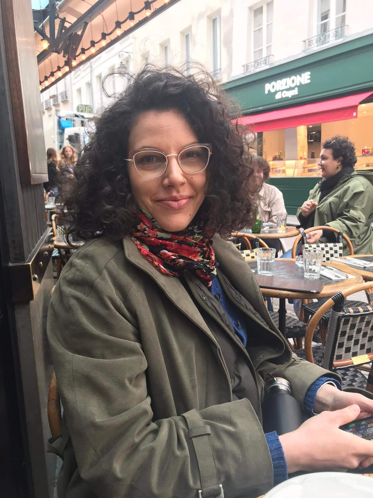

About
I am a social anthropologist working at the confluence of economic and environmental anthropology to understand the world of market-based solutions to the e-waste crisis. My focus is on the value transformations effected by the people involved in transforming e-waste recycling in responsible India where legal frameworks have only been introduced recently and practices unbridled by industrial regulations, standards, and certifications have long dominated recycling practice.
My interests range from the waste trade as a social mobility strategy for marginalized sections of society and the social effects and portrayals of working with toxic substances. At the heart of my research are the contradictory effects of market logic in environmental sustainability projects. I am currently converting my doctoral thesis into a book on e-waste recycling in India titled The Value of Waste: value transformations in the e-waste sphere in India’s green transition. Alongside, I have been awarded funding by the Leverhulme Trust to start a new project on regulating solid waste movements in the Indian Himalayas titled The world’s highest rubbish dump: a Himalayan Anthropocene.
Research Interests
- Market-based solutions to the e-waste crisis
- Social mobility and the waste trade
- The social effects and portrayals of working with toxic substances